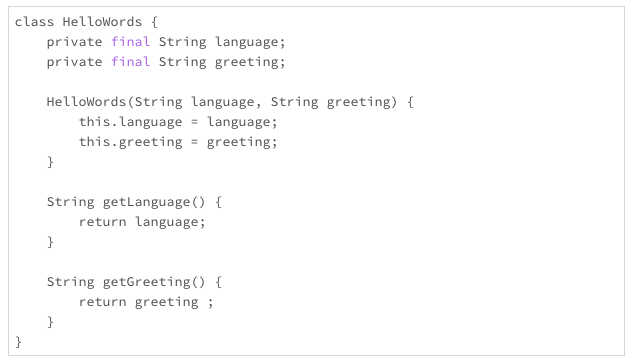
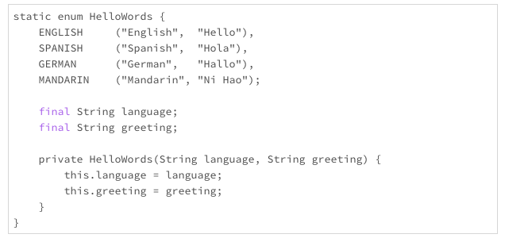
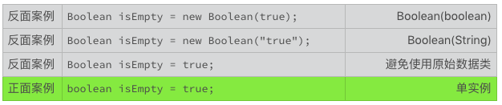
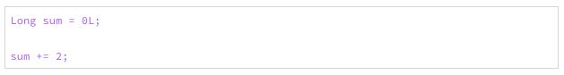
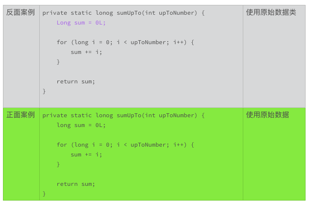
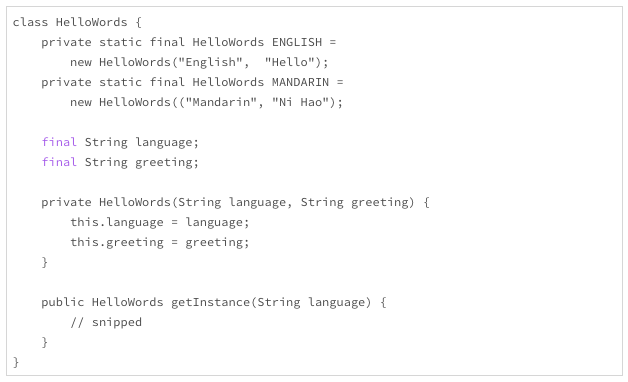
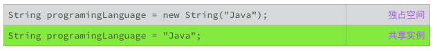
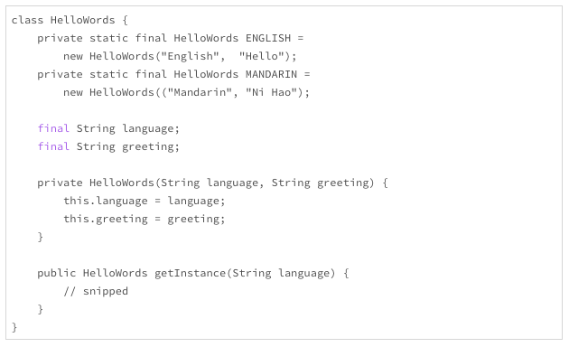

- 00 开篇词 你写的每一行代码，都是你的名片.md.html
- 01 从条件运算符说起，反思什么是好代码.md.html
- 02 把错误关在笼子里的五道关卡.md.html
- 03 优秀程序员的六个关键特质.md.html
- 04 代码规范的价值：复盘苹果公司的GoToFail漏洞.md.html
- 05 经验总结：如何给你的代码起好名字？.md.html
- 06 代码整理的关键逻辑和最佳案例.md.html
- 07 写好注释，真的是小菜一碟吗？.md.html
- 08 写好声明的“八项纪律”.md.html
- 09 怎么用好Java注解？.md.html
- 10 异常处理都有哪些陷阱？.md.html
- 11 组织好代码段，让人对它“一见钟情”.md.html
- 12丨组织好代码文件，要有“用户思维”.md.html
- 13 接口规范，是协作的合约.md.html
- 14 怎么写好用户指南？.md.html
- 15 编写规范代码的检查清单.md.html
- 16丨代码“规范”篇用户答疑.md.html
- 17 为什么需要经济的代码？.md.html
- 18丨思考框架：什么样的代码才是高效的代码？.md.html
- 19 怎么避免过度设计？.md.html
- 20 简单和直观，是永恒的解决方案.md.html
- 21 怎么设计一个简单又直观的接口？.md.html
- 22丨高效率，从超越线程同步开始！.md.html
- 23 怎么减少内存使用，减轻内存管理负担？.md.html
- 24 黑白灰，理解延迟分配的两面性.md.html
- 25 使用有序的代码，调动异步的事件.md.html
- 26 有哪些招惹麻烦的性能陷阱？.md.html
- 27 怎么编写可持续发展的代码？.md.html
- 28 怎么尽量“不写”代码？.md.html
- 29 编写经济代码的检查清单.md.html
- 30丨“代码经济篇”答疑汇总.md.html
- 31 为什么安全的代码这么重要？.md.html
- 32 如何评估代码的安全缺陷？.md.html
- 33 整数的运算有哪些安全威胁？.md.html
- 34 数组和集合，可变量的安全陷阱.md.html
- 35 怎么处理敏感信息？.md.html
- 36 继承有什么安全缺陷？.md.html
- 37 边界，信任的分水岭.md.html
- 38 对象序列化的危害有多大？.md.html
- 39 怎么控制好代码的权力？.md.html
- 40 规范，代码长治久安的基础.md.html
- 41 预案，代码的主动风险管理.md.html
- 42 纵深，代码安全的深度防御.md.html
- 43 编写安全代码的最佳实践清单.md.html
- 44 “代码安全篇”答疑汇总.md.html
- Q&A加餐丨关于代码质量，你关心的那些事儿.md.html
- 结束语 如何成为一个编程好手？.md.html
- 捐赠
23 怎么减少内存使用，减轻内存管理负担？
管理内存，不管是什么编程语言，向来都是一个难题。Java语言能够长期领先的一个重要原因，就是它拥有强大的内存管理能力，并且这种能力还在不断地进化。然而，只依靠Java内在的内存管理能力，是远远不够的。
2018年9月，亚马逊向OpenJDK社区提交了一个改进请求。这个改进涉及到一个问题，如果一个服务的缓存数量巨大，比如说有10万个连接会话，Java的垃圾处理器要停滞几分钟，才能清理完这么巨大的缓存。而这几分钟的停滞，是不可忍受的事故。
这是一个值得我们关注的细节。缓存的本意，就是为了提高效率。然而，拥有过多的用户，过多的缓存，反而会让效率变低。
随着大数据、云计算以及物联网的不断演进，很多技术都面临着巨大的挑战。七八年前（2010年左右），能解决C10K（同时处理1万个用户连接）问题，感觉就可以高枕无忧了。现在有不少应用，需要开始考虑C10M（同时处理1千万个用户连接）问题，甚至是更多的用户连接，以便满足用户需求。很多以前不用担心的问题，也会冒出来算旧账。
要想让内存使用得更有效率，我们还需要掌握一些成熟的实践经验。
使用更少的内存
提高内存使用最有效率的办法，就是使用更少的内存。这听起来像是废话，却也是最简单直接、最有用的办法。减少内存的使用，意味着更少的内存分配、更少的内存填充、更少的内存释放、更轻量的垃圾回收。内存的使用减少一倍，代码的效率会成倍地提升，这不是简单的线性关系。
减少内存的使用，办法有且只有两个。第一个办法是减少实例的数量。第二个办法是减小实例的尺寸。
减少实例数量
还记得以前我们用到的，在不同的语言环境下，该怎么打招呼的代码吗？上一次，我们把它改成了不可变的类，避免了线程同步的问题。我把这段代码重新抄录在下面。
- 这段代码还有个问题，就是内存使用不够友好。对于汉语环境来说，打招呼用“你好”。如果使用上面的设计，那么每次使用汉语环境，调用构造方法，都产生一个不同的实例对象。
如果只实例化一次，当然没有什么问题。如果要实例化10次，100次，1000次，10000次，而且每个实例都是固定的汉语加“你好”，这就是很大的浪费了。内存的使用，随着实例的数量线性增长，100个实例，就要使用100倍的内存。即便实例的产生和废弃都非常迅速，在巨大的实例数量面前，Java的垃圾处理器也会有很大的压力。
HelloWords helloWords = new HelloWords("Chinese", "Ni Hao");
......
System.out.prinyln(
"The hello words in Chinese: " + helloWords.getGreeting());
如果一种语言环境的打招呼的办法是固定不变的，而且语言环境的数量有限的话，我们就只有必要使用一个实例。
如果有了这个意识的话，那么对于这个打招呼的代码，我们就可以很自然地想到使用枚举类型，把它改进成下面的样子。
- 使用了枚举类型后，每一种语言就只有一个实例了。不管使用多少次，对内存的影响，对Java的垃圾处理器的影响，几乎可以忽略不计。
对于数量有限的对象，我们应该优先考虑使用枚举类型，比如交通标志，国家名称等等。其实，枚举类型就是一种常用的数据静态化的范例。我们还会在后面讨论其他类似的数据静态化的处理方式。
避免不必要的实例
Java语言里，有一些历史遗留的接口设计问题，会无意中导致不必要的实例。我们下面来看看两个例子。
第一个例子是应用程序使用了不必要的构造函数。比如，使用String的构造函数实例化一串字符。
- 上面的反面实例，每次调用都会产生一个实例对象，而这个实例对象需要交给Java垃圾处理器管理。事实上，由于String是一个不可变的类，每次调用产生的实例没有任何的区别。如果这样的代码经常使用，比如说被调用了十万次，就会有十万个实例对象产生，Java垃圾处理器就需要管理十万个实例。
这是一个很大的，不必要的开销。上面的两个正面案例，使用单实例的编码习惯，无论这段代码被调用了多少次，在Java的运行环境下，都只有一个实例。而且，相同的字符串，即使位于不同的代码空间里，在同一Java的运行环境下，也都只有一个实例。
String类的这个构造函数，是一个接口设计的历史遗留问题，价值小，问题多。Java基础类库里，还有一些类似的历史遗留问题，特别是原始数据类型（primitive type）对应的类。我们要避免使用它们的构造方法，甚至避免使用这些类。
- 幸运的是，这些原始数据类型对应类的构造方法，从Java 9开始，就已经被废弃了。但是这些方法依然存在，这些类依然存在。不论在哪里，如果你看到还有代码使用原始数据类型的构造函数，都可以提交一个问题报告。这样的更改，付出少，收益大。
避免使用原始数据类
通过上面的讨论，我们可以理解，为什么要避免使用原始数据类型的构造方法。可是为什么还要避免使用原始数据类呢？这里涉及到Java原始数据类型的自动装箱（boxing）与拆箱（unboxing）的类型转换。
比如说，下面的代码，就涉及到一个装箱的过程。整数0和2都要先被转换成一个Long类的实例，然后才执行赋值操作。
- 这个装箱的过程，就产生了不必要的实例。如果这样的转换数量巨大，就会有明显的性能影响。

使用单实例模式
由于Java内在的单实例模式，我们可以很方便地使用Java的原始数据类型，而不用担心实例数量的增长。对于复合的类，我们也可以自己设计单实例模式，从而减少多实例带来的不必要的开销。
比如，下面的代码，就是一个单实例模式例子。
- 单实例的设计方法有很多种方式，也有很多小细节需要处理，限于篇幅，我们就不在这里讨论这些技术了。欢迎你在讨论区分享你的经验和想法，来丰富这一部分的内容。
减小实例的尺寸
减少内存的使用还有另外一个办法，就是减小实例的尺寸。所谓减少实例的尺寸，就是减少这个实例占用的内存空间。这个空间，不仅包括实例的变量标识符占用的空间，还包括标识符所包含对象的占用空间。
比如下面的例子中，使用了String构造方法的变量，就独占了包括“Java”这四个字符的String实例空间。而使用了字符串赋值的变量，就和其他代码一起共享“Java”这四个字符的缺省的实例空间。
- 在减少变量数量这一方面，我们一般没有太多的自由空间。那么，在减少实例尺寸方面，我们能有所作为的，就是在标识符所指对象方面多费心思。简单地说，就是减少标识符所引用对象的尺寸。办法也有两个，第一个是尽量减少独占的空间；第二个是尽量使用共享的实例。
尽可能多地共享资源，这是一条提高效率的基本原则。在编写代码时，如果能够引用，就坚决不要拷贝；如果能够复用，就坚决不要新创。当然，资源的共享，除了上一次提到的线程同步问题，还有一个资源的维护问题。一个资源，如果不需要维护，那就太理想了。
有两类理想的共享资源，一类是一成不变（immutable）的资源，另一类是禁止修改（unmodifiable）的资源。
不可变的类
上一次，在讨论线程同步问题时，我们也讨论了不可变的类。由于不可变的类一旦实例化，就不再变化，我们可以放心地在不同的地方使用它的引用，而不用担心任何状态变化的问题。
无法修改的对象
还有一类对象，虽然不是不可变的类的实例，但是它的修改方法被禁止了。当我们使用这些对象的代码时，没有办法对它做出任何修改。这样，这些对象就有了和不可变的实例一样的优点，可以放心地引用。
从Java 8开始，Java核心类库通过Collections类提供了一系列的生成不可更改的集合的方法。这些方法，极大地减轻了集合的共享和维护问题。
比如，下面的这个方法，就返回了一个不可更改的列表对象。这个对象，可以赋值给多个标识符，不需要列表的拷贝，也不用担心列表的维护问题。在合适的场景，考虑使用好不可更改的集合，是一个值得推荐的编码习惯。
public List<byte[]> getStatusResponses() {
List<byte[]> responses = new ArrayList<>();
// snipped
return Collections.unmodifiableList(responses);
}
毋庸置疑的是，我们不能总是使用不变的共享资源。可以变化的共享资源也有难以替代的作用。后面的章节，我们再接着讨论使用可变的共享资源的技巧。
小结
今天，我们主要讨论了怎么减少内存使用。基本的方向有两个，一个是减少实例数量，另一个是减少实例的尺寸。这两个方向看着都很简单，我们在编码时，要养成考虑这两个因素的习惯。想得多了，用得多了，你编写的代码对内存就会越来越友好，设计的接口也会越来越好用。
应用程序方面，内存使用的优化技术和实践有很多。欢迎你在留言区，讨论这些技术和经验，分享你使用这些技术的心得体会，我们一起来学习、精进。
一起来动手
我上面使用的一个例子，写得确实很丑陋。不过，当我想到，可以把它当作一个练手题的时候，我就稍微宽心了点。
你琢磨琢磨下面的这段代码，看看能不能实现getInstance()这个方法。该怎么修改，才能让这个方法更有效率？
另外，你能想明白为什么构造方法会设计成私有方法吗？变量为什么没有使用private关键字？这些小细节很有意思，如果你已经清楚了这些细节背后的原因，也欢迎你分享在讨论区。
欢迎你在留言区讨论上面的问题，也可以把这篇文章分享给你的朋友或者同事，我们一起来看看这个有点丑的代码，可以变得有多美。

© 2019 - 2023 Liangliang Lee. Powered by gin and hexo-theme-book.